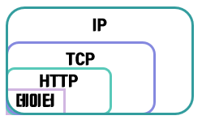

소켓(Socket)
- HTTP의 문제 HTTP는 클라이언트와 서버간의 접속을 유지 하지 않으며 한 번에 한방양으로만 통신이 가능한 half-duplex이다. 하지만 기술이 발전하고 시대가 지나감에 따라 서로 주고 받는 데이터의 양이 많아지면서 half-duplex로 인한 성능 저하는 피할 수 없게 되었다.
또한 HTTP는 많은 헤더 데이터를 가지고 있고, 클라이언트의 요청에 의한 서버의 답변이 아닌 서버의 자발적인 데이터 전송은 HTTP의 근본적 메커니즘 탓에 한계가 있다.
먼저 소켓을 사용하지 않았을 때의 네트워크 통신에 대해서 알아보자.  한쪽에서 데이터를 반대쪽으로 보내려면 데이터를 HTTP 프로토콜로 감싸고 헤더를 붙인뒤, 그 겉을 TCP로 감싸고 헤더를 붙이고, 그 겉은 IP로 감싸고 헤더를 붙인다음 보낼 것이다.(위 그림 참고)
이러면 HTTP를 이용하기 때문에 위에서 말했던 HTTP의 문제점이 발생할 것이다. 이제 소켓을 사용했을 때의 그림을 보자. 소켓을 사용하면 위의 그림처럼 데이터를 전송할 때 HTTP를 사용하지 않는다.(그림에서는 TCP를 예로 들었으나 다른 프로토콜도 사용이 가능하다. UDP 등)
대신 TCP나 UDP 안에 데이터를 넣어주기 위해서 소켓을 인터페이스로 사용하여 집어넣을 뿐이다.
이렇게 소켓을 사용하면 http를 사용하지 않기 때문에 불필요한 헤더를 보낼 필요가 없으며 상대방의 IP와 포트 번호를 알고만 있으면 된다. 또한 TCP를 이용할 경우 3way handshake와 4way handshake 방식으로 인하여 커넥션을 유지, 제거를 할 수 있으며 서버에서 클라이언트측으로 일방적인 데이터의 전송이 가능해진다.